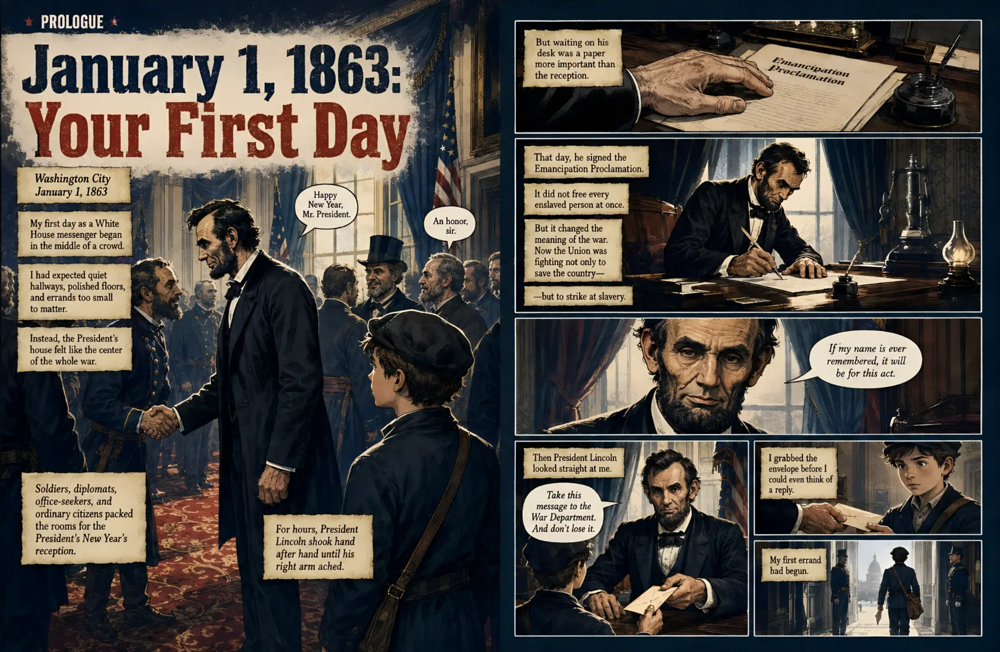

A front-row job inside history.
The White House becomes the center of a moving story.
A fictional young messenger carries readers through real rooms, documents and decisions during Lincoln’s wartime presidency.
History Hunters · Book Three
The battles were fought far away.
The decisions weren’t.
See the Civil War from inside the White House—where words, messages and decisions could move a nation.
Move to explore · Click to look inside
“My son finally saw how a decision in Washington could change what happened on a battlefield.”More reviews ↓
See inside the book
The book opens as you reach it. Use the arrows or chapter markers to explore six real interior spreads.

Swipe to turn
Begin beside Lincoln’s desk on the day the Emancipation Proclamation changes the meaning of the war.
Spread 1 of 6
Why readers enjoy it
Three reasons young readers keep turning the pages.
A front-row job inside history.
A fictional young messenger carries readers through real rooms, documents and decisions during Lincoln’s wartime presidency.
A complicated war made visible.
Timelines, campaign maps and diagrams show how messages, armies, technology and political choices affected one another.
Honest history, handled carefully.
Slavery, war and Lincoln’s final days are treated seriously, with age-appropriate detail and a clear line between fiction and fact.
Reader reviews
“My son knew Lincoln freed enslaved people, but this helped him see the pressure, decisions and people behind those words.”
“The maps and telegraph scenes make the relationship between Washington and the battlefield unusually clear.”
“Our 9- and 13-year-olds both found a way in—the younger followed the messenger, while the older stayed for the strategy.”
“Serious without being graphic. It doesn’t avoid slavery or war, but it gives young readers context instead of shock.”
“The fictional messenger is a smart guide, and the book is very clear about what is imagined and what comes from the historical record.”
Frequently asked
No. Slavery, battle and Lincoln’s final days are treated honestly, but without graphic gore. The visual storytelling is designed for curious readers ages 8 and up.
It is visual nonfiction told through a fictional young messenger. The messenger gives readers a way into the story; the major events, documents, people, places and historical framework are real.
Yes. It works well for American history, presidents, the Civil War, slavery, government, military strategy and communication studies.
No. It shows how the Civil War worked from the center of power: messages arrive, maps change, armies move and choices made in Washington reach battlefields hundreds of miles away.
Yes. It is Book Three in History Hunters, alongside Pompeii: The Last Day and Hindenburg: The Final Flight.
Bring the wartime White House home
Give a curious reader a place beside Lincoln’s desk—and a clear view of the words, messages and decisions that moved a nation.
 Paperback · Ages 8+View on Amazon↗You’ll continue securely on Amazon.
Look inside again ↑
Paperback · Ages 8+View on Amazon↗You’ll continue securely on Amazon.
Look inside again ↑